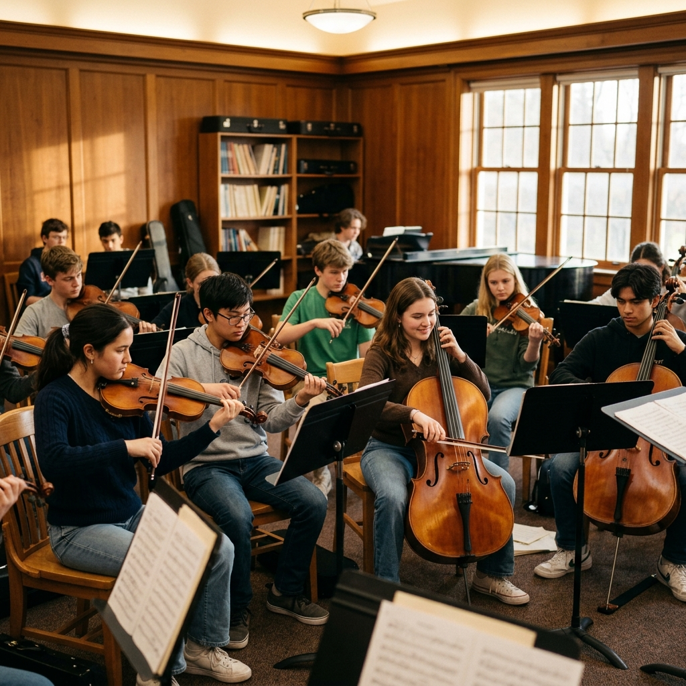
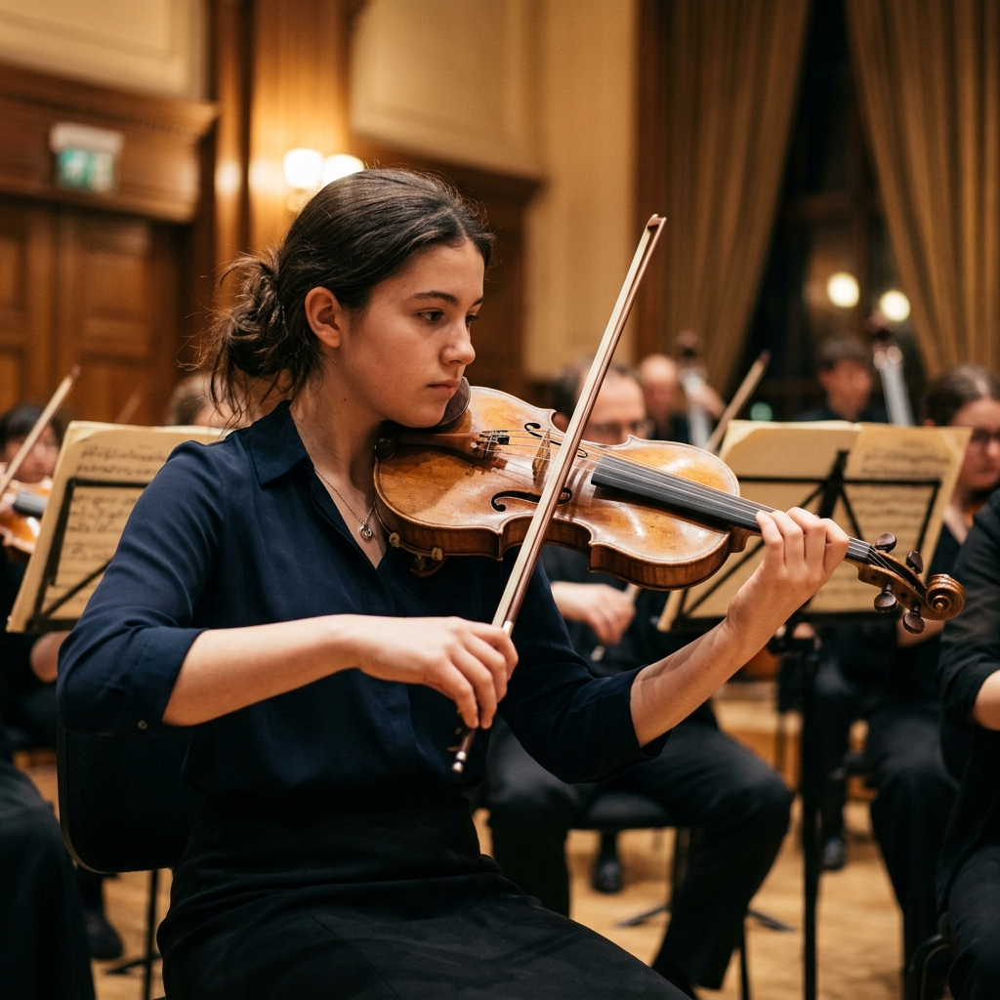
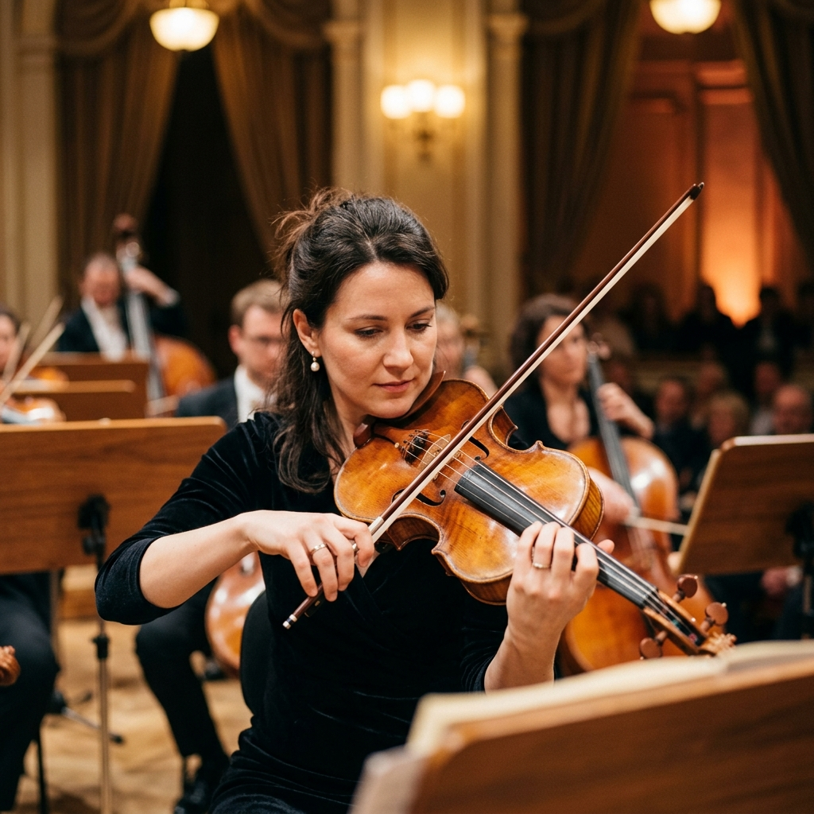
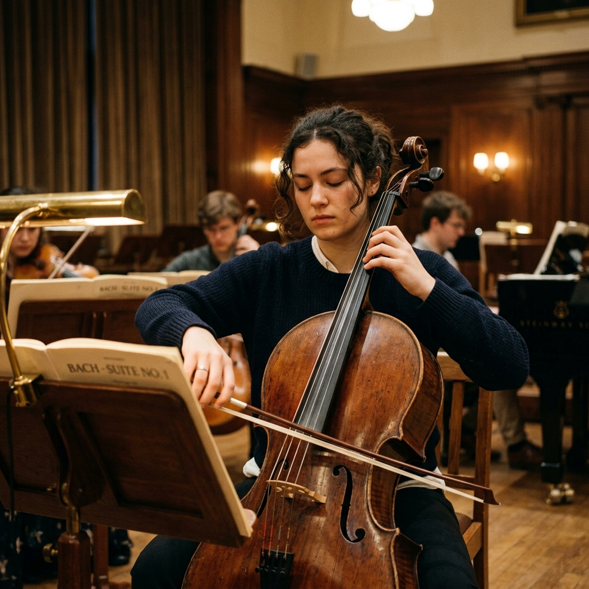
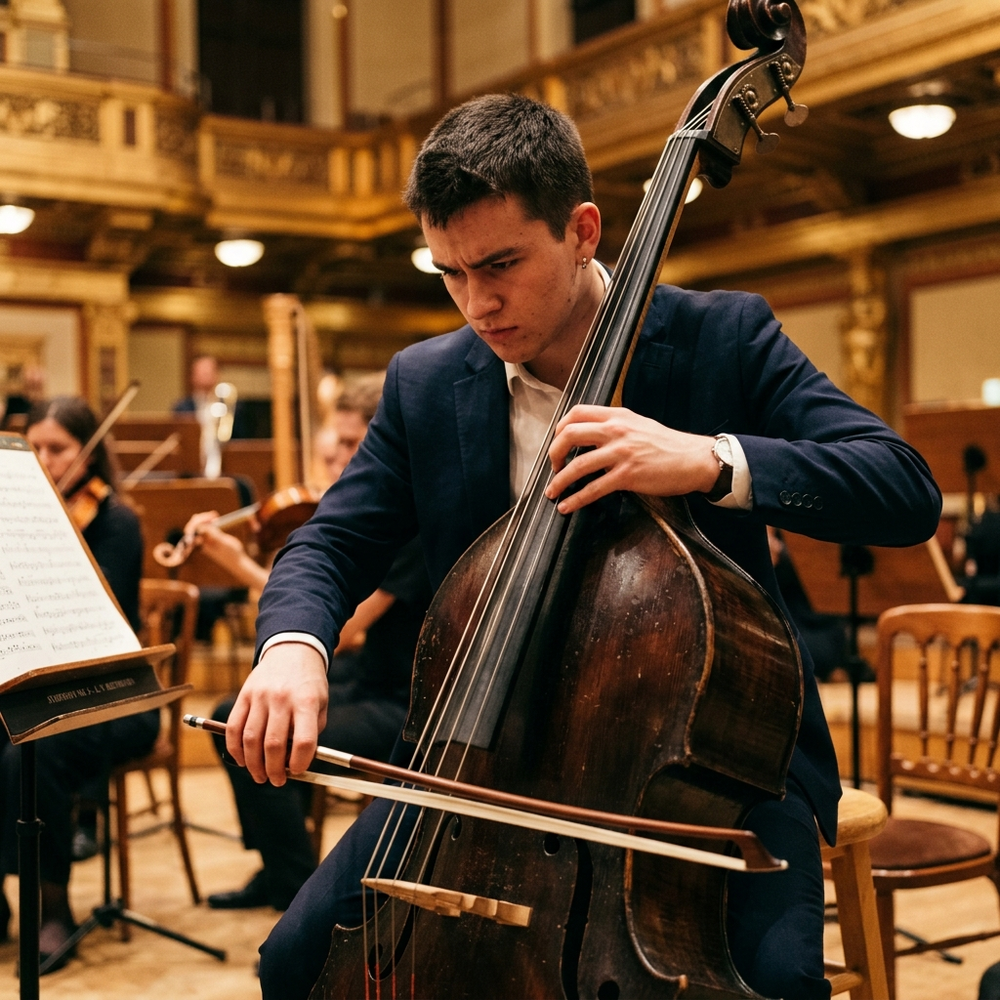
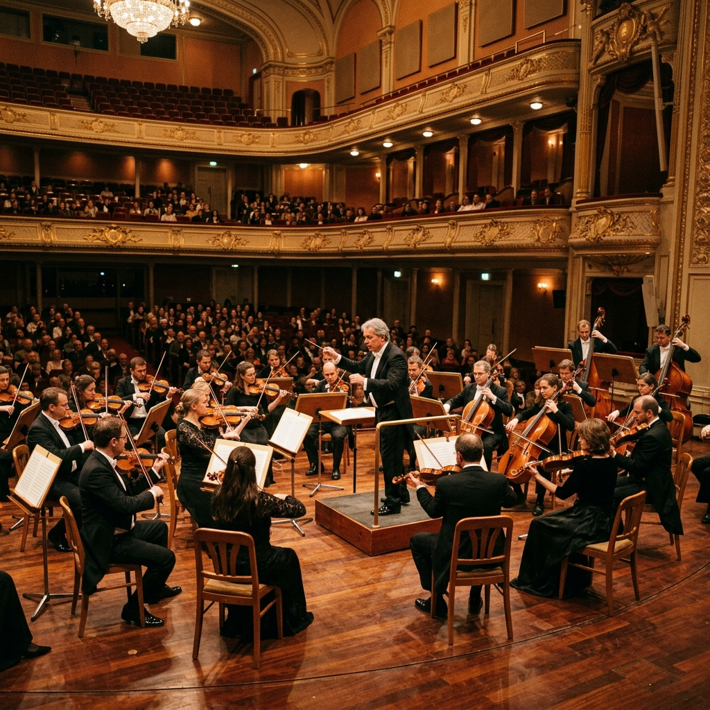
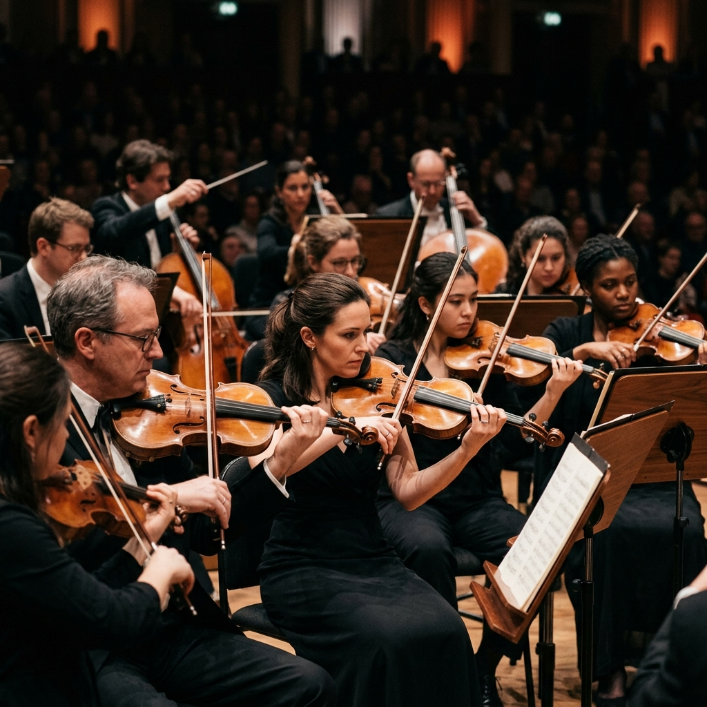
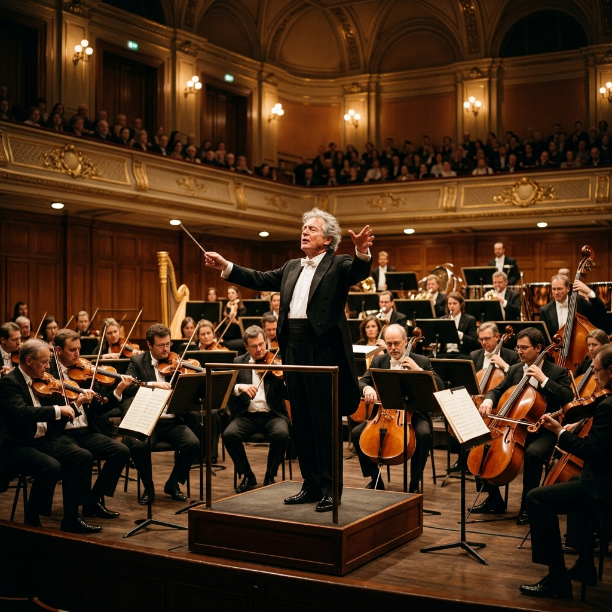

Quem somos
A ACCORP nasce da crença de que a música é uma ferramenta de formação, conexão e transformação. Por meio do ensino e da valorização da música de cordas, aproximamos as pessoas da arte e da cultura.
Mais música para um amanhã melhor.
O que fazemos

Violino
O mais agudo dos instrumentos clássicos de corda, o violino é a voz principal da orquestra, expressando com brilho e emoção a essência da nossa música.

Viola
Com um timbre quente e aveludado, a viola é o coração harmônico do grupo de cordas, trazendo profundidade e textura únicas para o som conjunto.

Violoncelo
Famoso por sua sonoridade rica e próxima à voz humana, o violoncelo oferece uma base sólida e melodias envolventes que cativam qualquer ouvinte.

Contrabaixo
O alicerce da orquestra. O contrabaixo fornece o peso e o ritmo fundamentais, sustentando toda a estrutura musical com suas notas profundas.
Como participar
Escolha seu instrumento
Conheça as opções disponíveis e descubra qual ressoa mais com você.
Agende uma visita
Venha conhecer nosso espaço, nossos professores e a energia da nossa comunidade.
Matricule-se
Garanta sua vaga em nossas turmas e inicie sua jornada musical conosco.
Comunidade e impacto
A ACCORP não ensina apenas a tocar um instrumento. Ela ensina disciplina, escuta e como trabalhar em conjunto. Minha filha se transformou desde que entrou.
A música de câmara e a orquestra me deram uma nova perspectiva de vida. Descobri na viola uma paixão que levarei para sempre.
Agenda e Galeria
Próximas Apresentações
-
15 Out
Concerto de Primavera
Teatro Municipal de Rio Preto
-
12 Nov
Recital de Câmara
Sede da ACCORP
-
20 Dez
Especial de Fim de Ano
Catedral de São José
Registros


